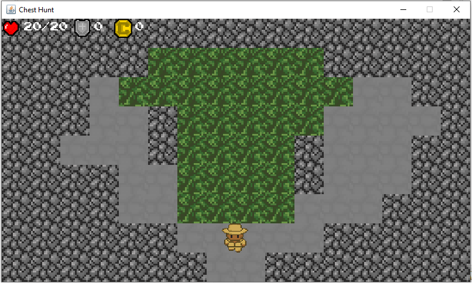

As time passes by, my skills develop more as I interact with people everyday. My soft skills were much likely to develop when I study at UE Manila. I was shy at first whenever I recite or volunteer to answer a question from my professor. Little by little, I gain confidence and it seems that I can do it just well. Another scenario where I gain some confidence is when we presented our thesis on Grade 12. I did not have an hard time to explain my part because I have the knowledge about it and I was the one who conducted the experiment that I am about to explain. With this, my verbal communication skills and public speaking skills developed and I am happy that I conquer my fear when I talk in front of a number of people. I was the leader of my research group at that time and I feel a great responsibility on performing my role. My groupmates were easily manage even though I am not that kind of strict leader who wants everyting to be submitted on time. Instead of being mad whenever they pass a late part of the research, I offer my help to them so that we could finish it before the deadline. I also experienced arranging our schedules to go to different places to gather and test our sample specimen on our research. I was not really into becoming a leader of a group when I was in my elementary grade but things had changed and I am proud of myself that I perform a great leader on our research group. The skill that I also develop during that time is critical thinking. I am into games that will give me some challenge on solving it. I tend to be interested on things on how they work or what kind of moves I should do in order to win the game. Playing chess with my classmates is what excites me whenever I go at our room. This kind of game helps me to think sharp and enhance my decision-making skills that could possibly help me on real-life situations. I choose STEM strand on my senior high school and there are lots of Mathematics and Science topics that are involved. I was able to use critical thinking and think of a way on solving the problems. Now that I am college student, there are some skills that I develop such as coding skills and computer skills. There are lots of programming languages that I learned in this course and I am eager to learn other languages. I had also experienced using applications such as Microsoft Word, Microsoft Access, and Microsoft Excel to help me do my activities. My personal skills had also improvement and it helps me to interact with other people as well as fixing myself. This skills are conducting self-management, being collaborative, willingness to learn, motivational, and having a positive attitude. All the skills that I mentioned was a great part of me that could help me achieve more in my life.
I like to do something to make myself productive so I don't waste my day. What I usually do is play online games, watching movies and animes, do a workout, and sometimes read some topics that catches my attention. In my teenage years, I used to play a guitar and practice fingerstyle because it looks cool when someone is doing it. It takes me a week to practice it but I enjoy doing it. Playing online games is also part of my hobbies and I still remember the first thing I played. I was on my 2nd grade at that time and I play Counter Strike, a FPS game, with my cousins and friends on my aunt's computer shop. I enjoyed playing the games before such as Left 4 Dead, Angry Birds, Need for Speed, and other popular games back in the day. As the evolution of gaming continues, I tried playing other games like League of Legends, a PVP multiplayer game, and this is where I spend my some money on a game. I was on my 6th grade when my friend invited me to play it. I was playing the game for over 9 years. The next game that I enjoyed playing is Valorant which is also a FPS game. I started playing it last year and I was interested to its gameplay because it is different from other FPS games. Gaming serves as a coping mechanism for me to have relaxation and to have fun despite of everyday problems. Wactching movies and anime is one of my hobbies and serves as a coping mechanism to destress and keep my mind at peace. I don't usually watch movies alone that is why I tend to watch with my partner. Not only that I spend time watching some movies but I also have bonding time with my partner and it really makes me happy and enjoy the movie that we are watching. Another hobby that I do in my everyday activity is doing some workout. I want to develop my physique not for getting attraction but for having improvement for my body and to love myself even more. When I was a kid, I was really thin and I was teased that I look like a walking stick. With the help of working out, I gain some weight and I am really proud of myself that I can do such things that helps me develop and improve myself. I prefer doing my workout at the gym but unfortunately I need to stop going because of the pandemic. Fortunately, My parents bought some weights that could help me conduct my exercise and try other workouts. This is a great hobby because it gives my body some exercise despite of seating for over 8-9 hours on online class. My additional hobby is that I prefer to read some topics that catches my attention. I usually see this topics on the group that I join on Meta. The group is all about programming wherein the members are sharing valuable information for future programmers and to those who want to improve their skills even more. I sometimes save some post and then read it to have an additional information about this kind of topic. I search for the definition of the terms that are unclear and unfamiliar to me so that I can understand it and try to apply it when I do some coding. I usually try coding what I had learn so that atleast I had experience doing it. To summarize it up, my hobbies are my coping mechanism to help me destress and continue my day-to-day activities. This allows me to improve myself and to enjoy life to the fullest.
 In my current state, I am interested on how games are created, PC assembling, qualities of a software engineer, improving my coding skills, and creating my first website. Being an IT student really needs hardwork and practice to develop their coding skills and critical thinking. The first game that I created was a 2D Dungeon Crawler Game called Chest Hunt. This game tested my sanity and patience because I watched a lot of videos regarding game creation. I created the game bacause it is a final requirement to one of my major subjects in my 2nd year 1st semester college. I created another game called Number Puzzle that serves as backup plan incase I can't finish my 2D game before the deadline. Luckily, I manage to finish the 2D game and present it to my professor. I still have interest on creating simple games and I hope that I could do it without any guide. PC assembling is also one of the things I am interested in. There was a time I went to Gilmore and go to some shop to canvas those parts that I need to assemble my PC. There where a lot of choices and I had a hard time what PC part to choose because I have a budget for buying a complete set. I need to be wise on my decision on buying those parts because it might not end well if there are some parts that are not compatible to each other. Let us say that I bought a DDR3 RAM but my RAM slot is a DDR4. This causes me to waste some money so that is why I need to be prepared on what parts I need to buy. Knowing what parts that you need can help you save time and can give you knowledge how to assemble and build your own computer. My next interest is knowing the qualitites of a software engineer. There was a time that our professor introduced a software engineer to our class. She was only 23 years old and I was amazed on her experiences and achievements in life. I saw that girl as a motivation that I can also reach my dream job of being a software engineer. The only thing that I am concern is how did she manage to become one. I did a little research about it and the qualities are high and I am quite nervous and at the same time motivated to take the challenge. It says that I need to have the skills and knowledge on doing the front-end and back-end of my work. This requires me more studying and more practice if I want to pursue this dream. This is where my interest in improving my coding skills begin. I tried some websites that could help me give a recap and add new information that I can apply on coding. As of now, I am trying to specialize C# programming languange and to further improve my coding skill on it. Some of my professors said that you must specialize and focus first on one programming language so that it can bring you ease on doing your code and convert it to other programming language. This will save me some time on reading books and articles about other programming language because what I only need to know is the syntax of that specific programming language. Lastly, I have develop an interest on creating website because I think it really is a cool thing to do as programmer. I am interested in learning how all of its parts work and how I am able to share unique information to those who will visit my future website. I am not that good at designing but I am trying my best to improve it while I take this course. There might be a lot of loadwork but this is for the best and this will serve as a training ground that could help me develop my own website someday.
 As time passes by, my skills develop more as I interact with people everyday. My soft skills were much likely to develop when I study at UE Manila. I was shy at first whenever I recite or volunteer to answer a question from my professor. Little by little, I gain confidence and it seems that I can do it just well. Another scenario where I gain some confidence is when we presented our thesis on Grade 12. I did not have an hard time to explain my part because I have the knowledge about it and I was the one who conducted the experiment that I am about to explain. With this, my verbal communication skills and public speaking skills developed and I am happy that I conquer my fear when I talk in front of a number of people. I was the leader of my research group at that time and I feel a great responsibility on performing my role. My groupmates were easily manage even though I am not that kind of strict leader who wants everyting to be submitted on time. Instead of being mad whenever they pass a late part of the research, I offer my help to them so that we could finish it before the deadline. I also experienced arranging our schedules to go to different places to gather and test our sample specimen on our research. I was not really into becoming a leader of a group when I was in my elementary grade but things had changed and I am proud of myself that I perform a great leader on our research group. The skill that I also develop during that time is critical thinking. I am into games that will give me some challenge on solving it. I tend to be interested on things on how they work or what kind of moves I should do in order to win the game. Playing chess with my classmates is what excites me whenever I go at our room. This kind of game helps me to think sharp and enhance my decision-making skills that could possibly help me on real-life situations. I choose STEM strand on my senior high school and there are lots of Mathematics and Science topics that are involved. I was able to use critical thinking and think of a way on solving the problems. Now that I am college student, there are some skills that I develop such as coding skills and computer skills. There are lots of programming languages that I learned in this course and I am eager to learn other languages. I had also experienced using applications such as Microsoft Word, Microsoft Access, and Microsoft Excel to help me do my activities. My personal skills had also improvement and it helps me to interact with other people as well as fixing myself. This skills are conducting self-management, being collaborative, willingness to learn, motivational, and having a positive attitude. All the skills that I mentioned was a great part of me that could help me achieve more in my life.
As time passes by, my skills develop more as I interact with people everyday. My soft skills were much likely to develop when I study at UE Manila. I was shy at first whenever I recite or volunteer to answer a question from my professor. Little by little, I gain confidence and it seems that I can do it just well. Another scenario where I gain some confidence is when we presented our thesis on Grade 12. I did not have an hard time to explain my part because I have the knowledge about it and I was the one who conducted the experiment that I am about to explain. With this, my verbal communication skills and public speaking skills developed and I am happy that I conquer my fear when I talk in front of a number of people. I was the leader of my research group at that time and I feel a great responsibility on performing my role. My groupmates were easily manage even though I am not that kind of strict leader who wants everyting to be submitted on time. Instead of being mad whenever they pass a late part of the research, I offer my help to them so that we could finish it before the deadline. I also experienced arranging our schedules to go to different places to gather and test our sample specimen on our research. I was not really into becoming a leader of a group when I was in my elementary grade but things had changed and I am proud of myself that I perform a great leader on our research group. The skill that I also develop during that time is critical thinking. I am into games that will give me some challenge on solving it. I tend to be interested on things on how they work or what kind of moves I should do in order to win the game. Playing chess with my classmates is what excites me whenever I go at our room. This kind of game helps me to think sharp and enhance my decision-making skills that could possibly help me on real-life situations. I choose STEM strand on my senior high school and there are lots of Mathematics and Science topics that are involved. I was able to use critical thinking and think of a way on solving the problems. Now that I am college student, there are some skills that I develop such as coding skills and computer skills. There are lots of programming languages that I learned in this course and I am eager to learn other languages. I had also experienced using applications such as Microsoft Word, Microsoft Access, and Microsoft Excel to help me do my activities. My personal skills had also improvement and it helps me to interact with other people as well as fixing myself. This skills are conducting self-management, being collaborative, willingness to learn, motivational, and having a positive attitude. All the skills that I mentioned was a great part of me that could help me achieve more in my life.